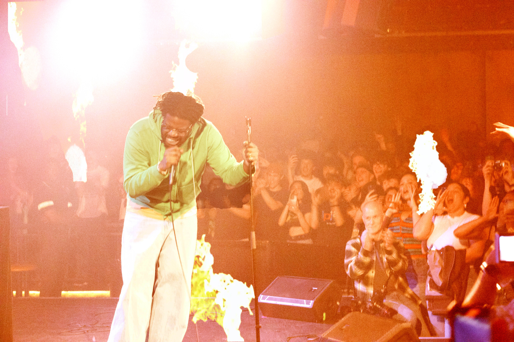
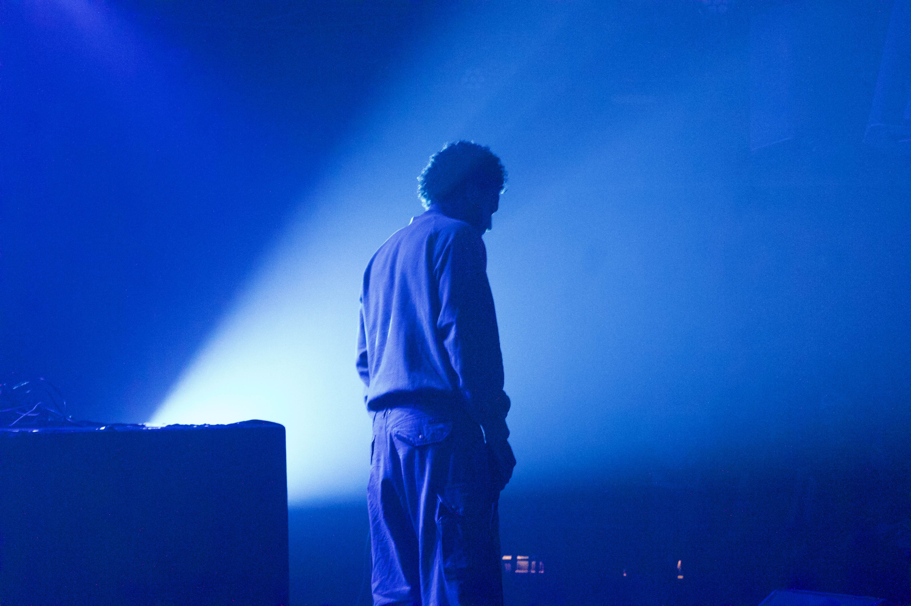

>



When I say “misfire,” I don’t mean it in a negative way. I’m referring to those unexpected experiences in my life where I found myself in places I normally wouldn’t be outside my usual “genre” yet ended up loving or at least genuinely enjoying them. That’s the beauty of exploring things on your own rather than relying on the internet’s algorithm, which follows predictable patterns and rarely gives you the chance to discover something unexpected or truly your own.